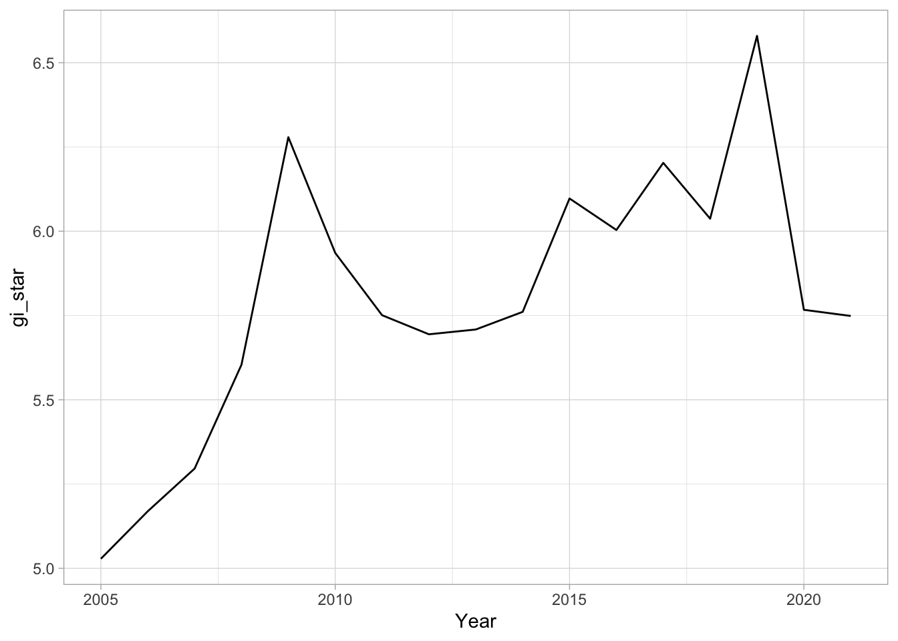
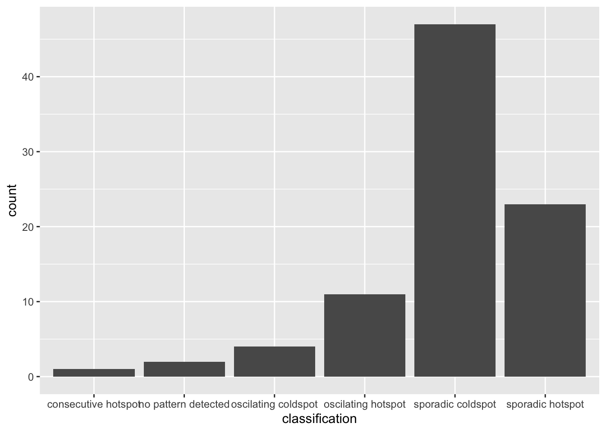
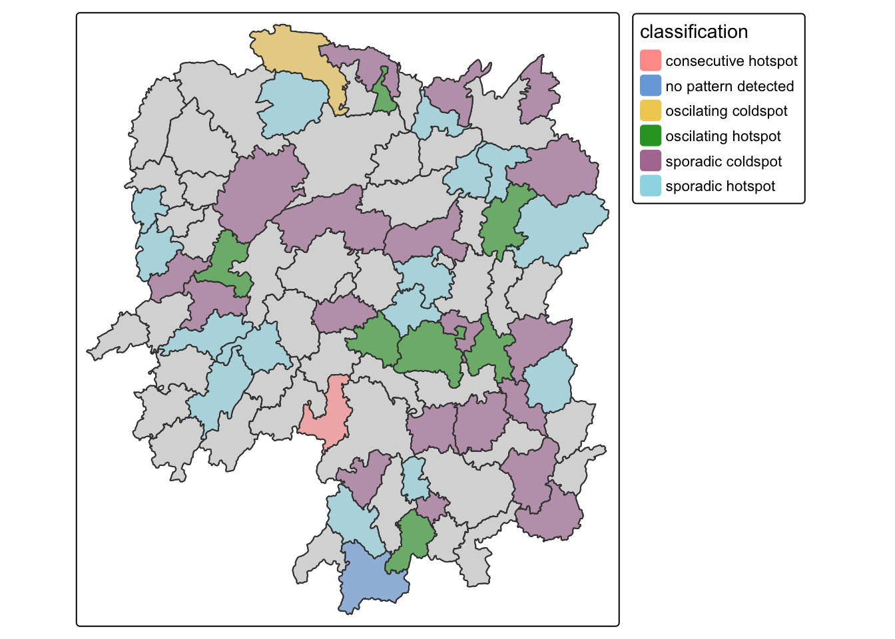

pacman::p_load(sf, sfdep, tmap,
plotly, tidyverse,
Kendall)In-class Ex5b: Emerging Hot Spot Analysis
1 Overview
Emerging Hot Spot Analysis (EHSA) is a spatio-temporal analysis method for revealing and describing how hot spot and cold spot areas evolve over time. The analysis consist of four main steps:
- Building a space-time cube,
- Calculating Getis-Ord local Gi* statistic for each bin by using an FDR correction,
- Evaluating these hot and cold spot trends by using Mann-Kendall trend test,
- Categorising each study area location by referring to the resultant trend z-score and p-value for each location with data, and with the hot spot z-score and p-value for each bin.
Important
It is highly recommended to read Emerging Hot Spot Analysis before you continue the exercise.
2 Getting started
2.1 Installing and Loading the R Packages
As usual, p_load() of pacman package will be used to check if the necessary packages have been installed in R, if yes, load the packages on R environment.
Five R packages are need for this in-class exercise, they are: sf, sfdep, tmap, plotly, and tidyverse.
3 The data
For the purpose of this in-class exercise, the Hunan data sets will be used. There are two data sets in this use case, they are:
- Hunan, a geospatial data set in ESRI shapefile format, and
- Hunan_GDPPC, an attribute data set in csv format.
Before getting started, reveal the content of Hunan_GDPPC.csv by using Notepad and MS Excel.
4 Importing geospatial data
In the code chunk below, st_read() of sf package is used to import Hunan shapefile into R.
hunan <- st_read(dsn = "/Users/cktan/Desktop/SMU/01_Geospatial Analytics (ISSS626)/Hands-on_Ex/Hands-on_Ex05/data/geospatial",
layer = "Hunan")Reading layer `Hunan' from data source
`/Users/cktan/Desktop/SMU/01_Geospatial Analytics (ISSS626)/Hands-on_Ex/Hands-on_Ex05/data/geospatial'
using driver `ESRI Shapefile'
Simple feature collection with 88 features and 7 fields
Geometry type: POLYGON
Dimension: XY
Bounding box: xmin: 108.7831 ymin: 24.6342 xmax: 114.2544 ymax: 30.12812
Geodetic CRS: WGS 845 Importing attribute table
In the code chunk below, read_csv() of readr is used to import Hunan_GDPPC.csv into R.
GDPPC <- read_csv("/Users/cktan/Desktop/SMU/01_Geospatial Analytics (ISSS626)/Hands-on_Ex/Hands-on_Ex05/data/aspatial/Hunan_GDPPC.csv")Rows: 1496 Columns: 3
── Column specification ────────────────────────────────────────────────────────
Delimiter: ","
chr (1): County
dbl (2): Year, GDPPC
ℹ Use `spec()` to retrieve the full column specification for this data.
ℹ Specify the column types or set `show_col_types = FALSE` to quiet this message.6 Creating a Time Series Cube
Before getting started, students must read this article to learn the basic concept of spatio-temporal cube and its implementation in sfdep package.
In the code chunk below, spacetime() of sfdep ised used to create an spatio-temporal cube.
GDPPC_st <- spacetime(GDPPC, hunan,
.loc_col = "County",
.time_col = "Year")Next, is_spacetime_cube() of sfdep package will be used to verify if GDPPC_st is indeed an space-time cube object.
is_spacetime_cube(GDPPC_st)[1] TRUEThe TRUE return confirms that GDPPC_st object is indeed an time-space cube.
7 Computing Gi*
Next, we will compute the local Gi* statistics.
7.1 Deriving the spatial weights
The code chunk below will be used to identify neighbors and to derive an inverse distance weights.
GDPPC_nb <- GDPPC_st %>%
activate("geometry") %>%
mutate(nb = include_self(
st_contiguity(geometry)),
wt = st_inverse_distance(nb,
geometry,
scale = 1,
alpha = 1),
.before = 1) %>%
set_nbs("nb") %>%
set_wts("wt")! Polygon provided. Using point on surface.Warning: There was 1 warning in `stopifnot()`.
ℹ In argument: `wt = st_inverse_distance(nb, geometry, scale = 1, alpha = 1)`.
Caused by warning in `st_point_on_surface.sfc()`:
! st_point_on_surface may not give correct results for longitude/latitude dataNote that this dataset now has neighbors and weights for each time-slice.
NoteThings to learn from the code chunk above
activate()of dplyr package is used to activate the geometry contextmutate()of dplyr package is used to create two new columns nb and wt.Then we will activate the data context again and copy over the nb and wt columns to each time-slice using
set_nbs()andset_wts()- row order is very important so do not rearrange the observations after using
set_nbs()orset_wts().
- row order is very important so do not rearrange the observations after using
We can use these new columns to manually calculate the local Gi* for each location. We can do this by grouping by Year and using local_gstar_perm() of sfdep package. After which, we use unnest() to unnest gi_star column of the newly created gi_starts data.frame.
gi_stars <- GDPPC_nb %>%
group_by(Year) %>%
mutate(gi_star = local_gstar_perm(
GDPPC, nb, wt)) %>%
tidyr::unnest(gi_star)8 Mann-Kendall Test
A monotonic series or function is one that only increases (or decreases) and never changes direction. So long as the function either stays flat or continues to increase, it is monotonic.
\(H_0\): No monotonic trend
\(H_1\): Monotonic trend is present
Interpretation:
- Reject the null-hypothesis null if the p-value is smaller than the alpha value (i.e. 1-confident level)
- Tau ranges between -1 and 1 where:
- -1 is a perfectly decreasing series, and
- 1 is a perfectly increasing series.
- -1 is a perfectly decreasing series, and
Important
You are encouraged to read Mann-Kendall Test For Monotonic Trend to learn more about the concepts and method of Mann-Kendall test..
8.1 Mann-Kendall Test on Gi
With these Gi* measures we can then evaluate each location for a trend using the Mann-Kendall test. The code chunk below uses Changsha county.
cbg <- gi_stars %>%
ungroup() %>%
filter(County == "Changsha") |>
select(County, Year, gi_star)ggplot(data = cbg,
aes(x = Year,
y = gi_star)) +
geom_line() +
theme_light()
8.2 Interactive Mann-Kendall Plot
We can also create an interactive plot by using ggplotly() of plotly package.
p <- ggplot(data = cbg,
aes(x = Year,
y = gi_star)) +
geom_line() +
theme_light()
ggplotly(p)8.3 Printing Mann-Kendall test report
cbg %>%
summarise(mk = list(
unclass(
Kendall::MannKendall(gi_star)))) %>%
tidyr::unnest_wider(mk)# A tibble: 1 × 5
tau sl S D varS
<dbl> <dbl> <dbl> <dbl> <dbl>
1 0.485 0.00742 66 136. 589.In the above result, sl is the p-value. With reference to the results, we will reject the hypothesis null and infer that a slight upward trend.
8.4 Mann-Kendall test data.frame
We can replicate this for each location by using group_by() of dplyr package.
ehsa <- gi_stars %>%
group_by(County) %>%
summarise(mk = list(
unclass(
Kendall::MannKendall(gi_star)))) %>%
tidyr::unnest_wider(mk)
head(ehsa)# A tibble: 6 × 6
County tau sl S D varS
<chr> <dbl> <dbl> <dbl> <dbl> <dbl>
1 Anhua 0.191 0.303 26 136. 589.
2 Anren -0.294 0.108 -40 136. 589.
3 Anxiang 0 1 0 136. 589.
4 Baojing -0.691 0.000128 -94 136. 589.
5 Chaling -0.0882 0.650 -12 136. 589.
6 Changning -0.750 0.0000318 -102 136. 589.We can also sort to show significant emerging hot/cold spots
emerging <- ehsa %>%
arrange(sl, abs(tau)) %>%
slice(1:10)
head(emerging)# A tibble: 6 × 6
County tau sl S D varS
<chr> <dbl> <dbl> <dbl> <dbl> <dbl>
1 Shuangfeng 0.868 0.00000143 118 136. 589.
2 Xiangtan 0.868 0.00000143 118 136. 589.
3 Xiangxiang 0.868 0.00000143 118 136. 589.
4 Chengbu -0.824 0.00000482 -112 136. 589.
5 Dongan -0.824 0.00000482 -112 136. 589.
6 Wugang -0.809 0.00000712 -110 136. 589.9 Performing Emerging Hotspot Spatial Analysis (EHSA)
Lastly, we will perform EHSA analysis by using emerging_hotspot_analysis() of sfdep package. It takes a spacetime object x (i.e. GDPPC_st), and the quoted name of the variable of interest (i.e. GDPPC) for .var argument. The k argument is used to specify the number of time lags which is set to 1 by default. Lastly, nsim map numbers of simulation t o be performed.
o be performed.
ehsa <- emerging_hotspot_analysis(
x = GDPPC_st,
.var = "GDPPC",
k = 1,
nsim = 99
)9.1 Visualising the distribution of EHSA classes
In the code chunk below, ggplot2 functions is used to reveal the distribution of EHSA classes as a bar chart.
ggplot(data = ehsa,
aes(x = classification)) +
geom_bar()
Figure above shows that sporadic cold spots class has the high numbers of county.
9.2 Visualising EHSA
In this section, you will learn how to visualise the geographic distribution EHSA classes. However, before we can do so, we need to join both hunan and ehsa together by using the code chunk below.
hunan_ehsa <- hunan %>%
left_join(ehsa,
by = join_by(County == location))Next, tmap functions will be used to plot a categorical choropleth map by using the code chunk below.
ehsa_sig <- hunan_ehsa %>%
filter(p_value < 0.05)
tmap_mode("plot")ℹ tmap mode set to "plot".tm_shape(hunan_ehsa) +
tm_polygons() +
tm_borders(alpha = 0.5) +
tm_shape(ehsa_sig) +
tm_fill("classification") +
tm_borders(alpha = 0.4)
── tmap v3 code detected ───────────────────────────────────────────────────────
[v3->v4] `tm_borders()`: use 'fill' for the fill color of polygons/symbols
(instead of 'col'), and 'col' for the outlines (instead of 'border.col').[v3->v4] `tm_borders()`: use `fill_alpha` instead of `alpha`.[v3->v4] `tm_borders()`: use `fill_alpha` instead of `alpha`.
9.3 Interpretation of EHSA classes